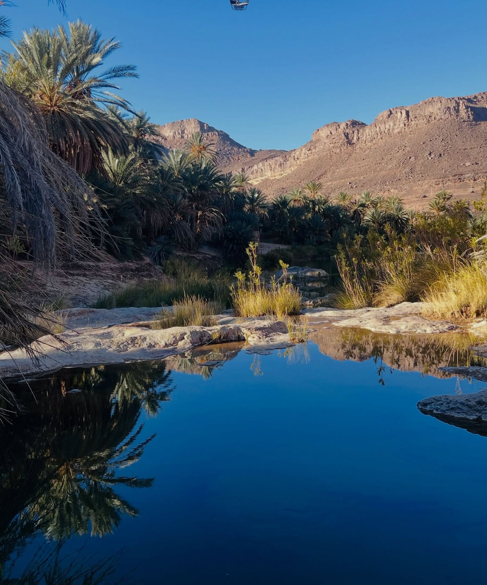
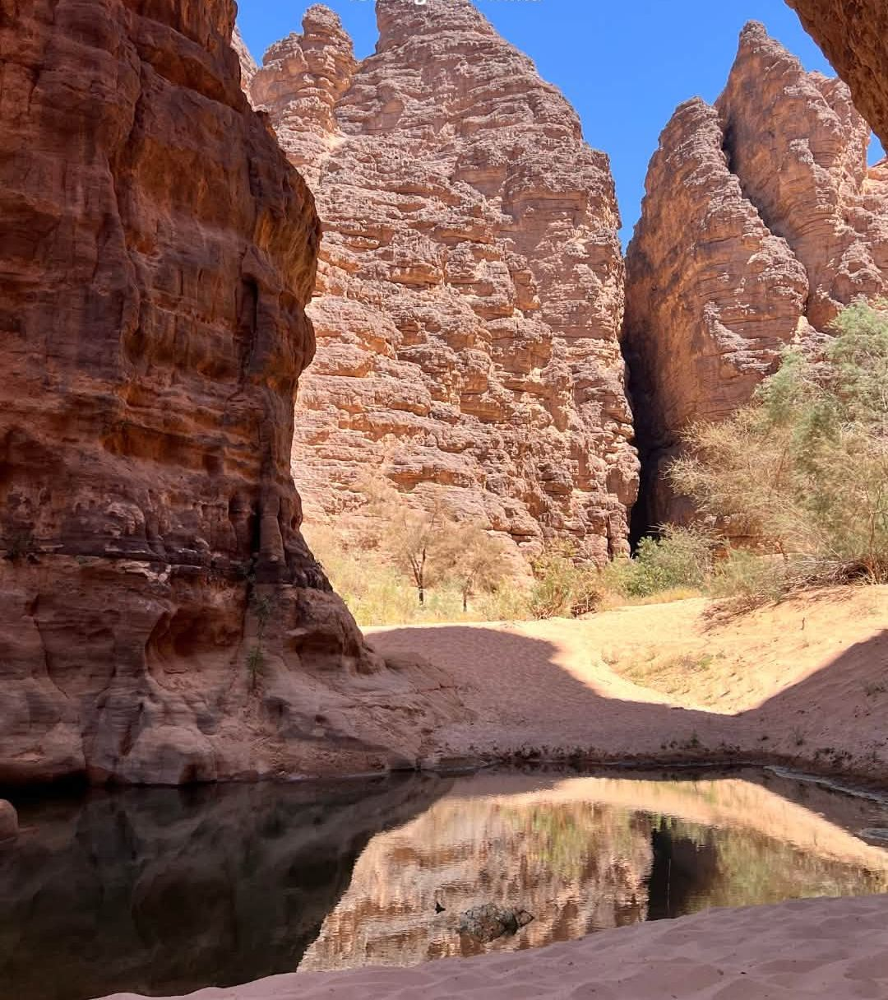
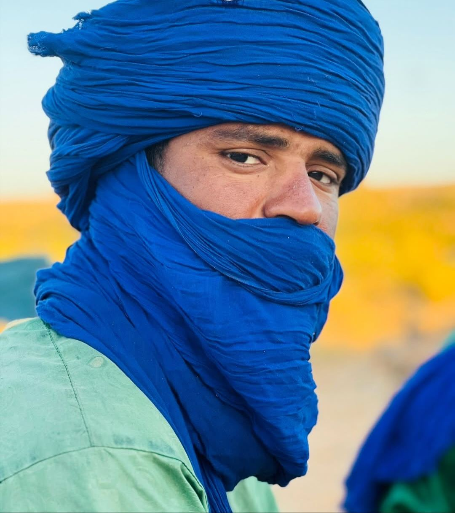
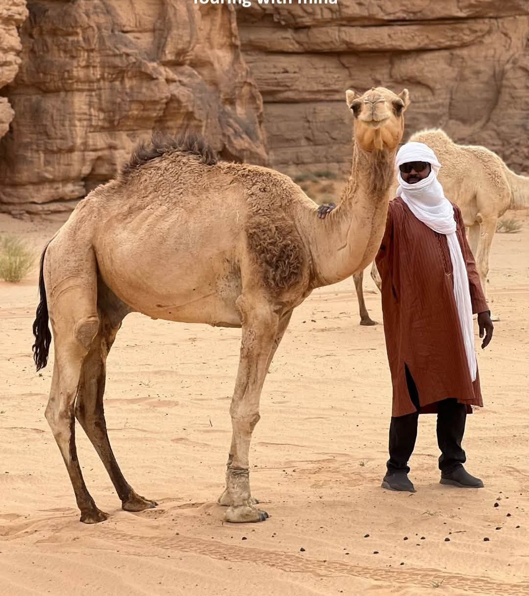
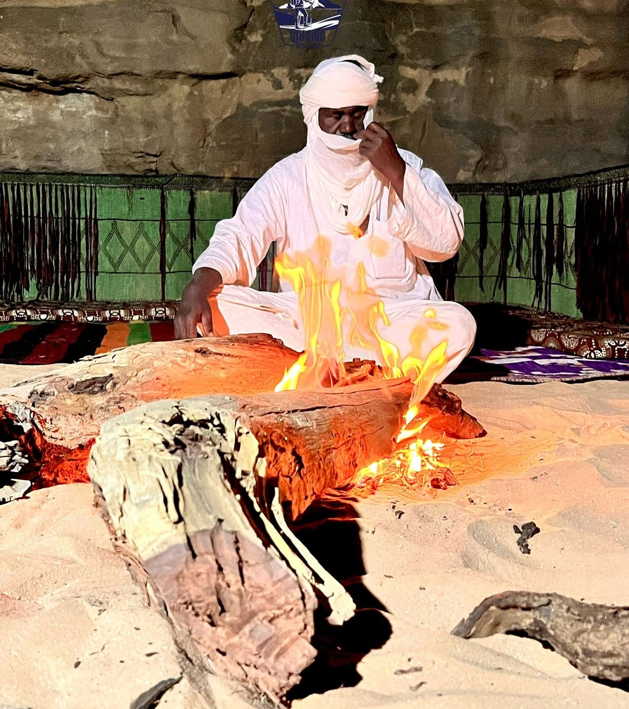

Touring with Mina, voyages privés au Sahara algérien
Faites défiler
Le désert se vit de l'intérieur
Voyages privés à Djanet, guidés par une équipe Imouhagh qui connaît chaque dune et chaque source.
Djanet, l'oasis au pied du Tassili n'Ajjer
Au sud-est de l'Algérie, entre les falaises du Tassili et les dunes rouges de la Tadrart, Djanet est l'une des dernières grandes portes du Sahara. On y vient pour marcher, écouter et dormir dehors.
Mina et son équipe Imouhagh organisent tout, du visa au dernier thé dans les dunes.
Découvrir notre histoire

Les circuits
Chaque programme est un point de départ. La durée, le rythme et les étapes se règlent avec vous.
Tous les circuits
Tadrart Rouge
Le grand classique : dunes couleur braise, arches de grès et gravures millénaires, jusqu'aux portes de la Libye.
Voir le circuit
Ihrir et Essendilène
Les sources cachées du Tassili : un lac entre les falaises, des palmiers et le canyon préféré de Mina.
Voir le circuit
Trek du Tassili
Montée à pied sur le plateau, avec des ânes porteurs, jusqu'à la cité de pierre de Sefar.
Voir le circuitVous n'avez rien à organiser
Tout est compris dans le voyage, de l'aéroport au bivouac.

4x4 et chauffeurs du désert
Des pilotes qui connaissent chaque piste.

Bivouac tout équipé
Tentes, matelas et couvertures fournis.

Pension complète
Cuisine du désert préparée sur place.

Guides Imouhagh
Une équipe touarègue qui partage sa culture.

Assistance visa
Nous vous guidons dans la démarche.

Transferts aéroport
Accueil à Djanet, à toute heure.

« Je suis tombée amoureuse de Djanet. Je suis là pour vous offrir un voyage que vous n'oublierez pas. »Mina
Ce que vous verrez
Ouvrir la galerie





Le blog du désert
Tous les articlesVotre voyage à Djanet commence par un message
Dites-nous vos dates et vos envies. Mina vous répond personnellement sous 24 heures.